arxiv一周文献泛读200727-200731
200727
Optical spectroscopic classification of 35 hard X-ray sources from the Swift-BAT 70-month catalogue
https://arxiv.org/abs/2007.12609
abstract
Authors: E. J. Marchesini, N. Masetti, E. Palazzi, et al.
Comments: Last draft version before referee's approval. Closest to the final published article
The nature of a substantial percentage (about one fifth) of hard X-ray sources discovered with the BAT instrument onboard the Neil Gehrels Swift Observatory (hereafter Swift) is unknown because of the lack of an identified longer-wavelength counterpart. Without such follow-up, an X-ray catalogue is of limited astrophysical value: we therefore embarked, since 2009, on a long-term project to uncover the optical properties of sources identified by Swift by using a large suite of ground-based telescopes and instruments.
In this work, we continue our programme of characterization of unidentified or poorly studied hard X-ray sources by presenting the results of an optical spectroscopic campaign aimed at pinpointing and classifying the optical counterparts of 35 hard X-ray sources taken from the 70-month BAT catalogue. This sample was selected out of the available information about the chosenobjects: either they are completely unidentified sources,or their association with a longer-wavelength counterpart is still ambiguous.
With the use of optical spectra taken at six different telescopes we were able to identify the main spectral characteristics (continuum type, redshift, and emission or absorption lines) of the observed objects, and determined their nature.
We identify and characterize a total of 41 optical candidate counterparts corresponding to 35 hard X-ray sources given that, because of positional uncertainties, multiple lower energy counterparts can sometimes be associated with higher energy detections. We discuss which ones are the actual (or at least most likely) counterparts based on our observational results.
In particular, 31 sources in our sample are active galactic nuclei: 16 are classified as Type 1 (with broad and narrow emission lines) and 13 are classified as Type 2 (with narrow emission lines only); two more are BL Lac-type objects. We also identify one LINER, one starburst, and 3 elliptical galaxies. The remaining 5 objects are galactic sources: we identify 4 of them as cataclysmic variables, whereas one is a low mass X-ray binary.
- 本文使用一批地面望远镜设备，尝试对Swift/BAT 70个月的目录中的35个未经良好证认的硬X射线源进行候选体证认，并从可见光光谱分析角度进行分类。
- 文章为这35个源找出了41个光学候选体，其中：
- 31个候选体是活动星系核，其中16个为1型（兼有宽线和窄线），13个为2型（仅有窄线），另外2个为蝎虎座BL型天体（BL Lacertae objects）。
- 1个LINER（Low ionization Nuclear Emission Region，低电离星系核发射区域），1个星暴星系，3个椭圆星系。
- 剩下5个是系内目标，其中4个是激变变星（cataclysmic variables，一个白矮星加一个被吸积的伴星组成的双星系统），另1个是低质量X射线双星。


The Fate of the Merger Remnant in GW170817 and its Imprint on the Jet Structure
https://arxiv.org/abs/2007.12245
abstract
Authos: Ariadna Murguia-Berthier, Enrico Ramirez-Ruiz, Fabio De Colle, Agnieszka Janiuk, Stephan Rosswog, William H. Lee
Comments: 5 figures, 7 pages, submitted to ApJL
The first neutron star binary merger detected in gravitational waves, GW170817 and the subsequent detection of its emission across the electromagnetic spectrum showed that these systems are viable progenitors of short γ-ray bursts (sGRB). The afterglow signal of GW170817 has been found to be consistent with a structured GRB jet seen off-axis, requiring significant amounts of relativistic material at large angles. This trait can be attributed to the interaction of the relativistic jet with the external wind medium. Here we perform numerical simulations of relativistic jets interacting with realistic wind environments in order to explore how the properties of the wind and central engine affect the structure of successful jets. We find that the angular energy distribution of the jet depends primarily on the ratio between the lifetime of the jet and the time it takes the merger remnant to collapse. We make use of these simulations to constrain the time it took for the merger remnant in GW170817 to collapse into a black hole based on the angular structure of the jet as inferred from afterglow observations. We conclude that the lifetime of the merger remnant in GW170817 was ≈0.8−0.9s, which, after collapse, triggered the formation of the jet.
- GW170817成协的短暴的余辉反映了其喷流具有结构性，这可能是相对论喷流与外部星风介质相互作用的结果。
- 本文对这种相互作用进行了数值模拟，探究星风的性质和中心引擎对成功喷流的结构会产生怎样的影响。结果发现喷流的能量角分布主要决定于喷流的存在时间与并合残骸塌缩时间的比值。
- 利用以上结果，跟据观测得到的喷流能量角分布，即可得出GW170817中的并合残骸的存活时间（塌缩至黑洞所经历的时间）为0.8-0.9秒。


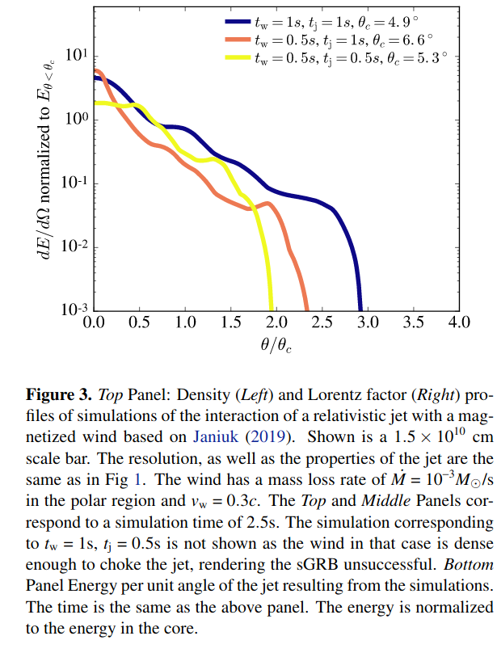
An Energy Inventory of Tidal Disruption Events
https://arxiv.org/abs/2007.12198
abstract
Authors: Brenna Mockler, Enrico Ramirez-Ruiz
Comments: submitted to ApJL. 13 pages, 4 figures, 1 table
Tidal disruption events (TDEs) offer a unique opportunity to study a single super-massive black hole (SMBH) under feeding conditions that change over timescales of days or months. However, the primary mechanism for generating luminosity during the flares remains debated. Despite the increasing number of observed TDEs, it is unclear whether most of the energy in the initial flare comes from accretion near the gravitational radius or from circularizing debris at larger distances from the SMBH. The energy dissipation efficiency increases with decreasing radii, therefore by measuring the total energy emitted and estimating the efficiency we can derive clues about the nature of the emission mechanism. Here we calculate the integrated energy, emission timescales, and average efficiencies for the TDEs using the Modular Open Source Fitter for Transients (MOSFiT). Our calculations of the total energy generally yield higher values than previous estimates. This is predominantly because, if the luminosity follows the mass fallback rate, TDEs release a significant fraction of their energy long after their light curve peaks. We use MOSFiT to calculate the conversion efficiency from mass to radiated energy, and find that for many of the events it is similar to efficiencies inferred for active galactic nuclei. There are, however, large systematic uncertainties in the measured efficiency due to model degeneracies between the efficiency and the mass of the disrupted star, and these must be reduced before we can definitively resolve the emission mechanism of individual TDEs.
-
目前我们还不清楚TDE的耀发中的主要辐射机制，不清楚在最初耀发中的能量的主要来源（来自引力半径附近的吸积区域或远一些的环绕碎片circularizing debris）。在TDE吸积区域中，半径越小，能量耗散效率（energy dissipation efficiency）越高，所以测量TDE辐射的总能量并估算其（辐射）效率可以给我们提供有关辐射机制的线索。
-
本文使用MOSFiT来计算TDE事件的总能量（integrated energy），辐射时标和平均辐射效率。
-
本文计算给出的能量要普遍高于以往的估计，主要原因在于，如果TDE光度是随质量回落率（mass fallback rate）变化，则在光变曲线的峰值过后，TDE仍会继续辐射大量能量。
-
计算给出的多数TDE事件的能量转换效率与活动星系核的效率类似。不过文章指出效率的测量存在较大的系统误差（由于模型存在辐射效率和被瓦解的星体质量间的简并），有必要减少这样的简并才能够更准确地解决单个事件的能量机制问题。
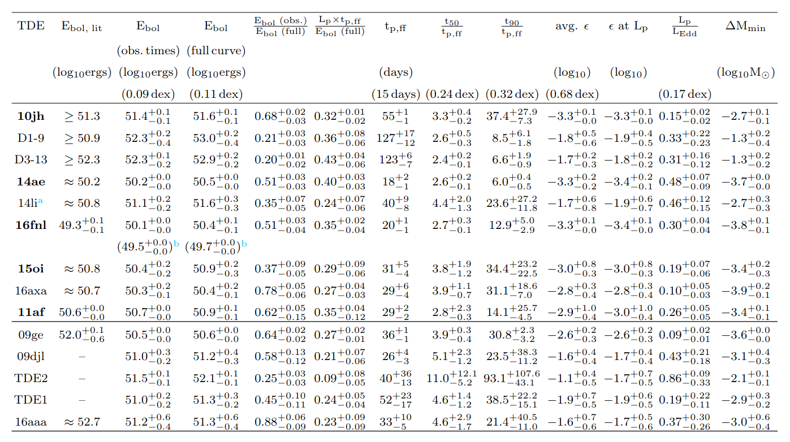
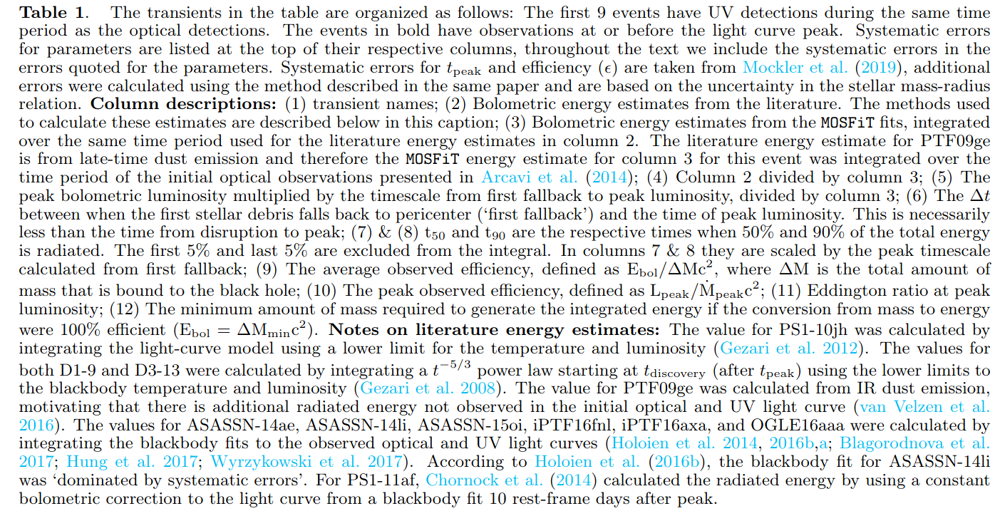


200728
A targeted search for repeating fast radio bursts associated with gamma-ray bursts
https://arxiv.org/abs/2007.13246
abstract
Authors: Nipuni T. Palliyaguru, Devansh Agarwal, Golnoosh Golpayegani et al.
Comments: 7 pages, 4 figures, submitted to MNRAS
The origin of fast radio bursts (FRBs) still remains a mystery, even with the increased number of discoveries in the last three years. Growing evidence suggests that some FRBs may originate from magnetars. Large, single-dish telescopes such as Arecibo Observatory (AO) and Green Bank Telescope (GBT) have the sensitivity to detect FRB~121102-like bursts at gigaparsec distances. Here we present searches using AO and GBT that aimed to find potential radio bursts at 11 sites of past γ--ray bursts that show evidence for the birth of a magnetar. We also performed a search towards GW170817, which has a merger remnant whose nature remains uncertain. We place 10σ fluence upper limits of ≈0.036 Jy ms at 1.4 GHz and ≈0.063 Jy ms at 4.5 GHz for AO data and fluence upper limits of ≈0.085 Jy ms at 1.4 GHz and ≈0.098 Jy ms at 1.9 GHz for GBT data, for a maximum pulse width of ≈42 ms. The AO observations had sufficient sensitivity to detect any FRB of similar luminosity to the one recently detected from the Galactic magnetar SGR 1935+2154. Assuming a Schechter function for the luminosity function of FRBs, we find that our non-detections favor a steep power--law index (α≲−1.0) and a large cut--off luminosity (≳ ).
- 作者尝试使用两个大的单盘（single-dish）射电望远镜Arecibo Observatory (AO,300m)和Green Bank Telescope (GBT,100m)在11个疑似产生了磁星的过往GRB的发生地，以及GW170817的区域进行潜在射电爆的搜寻（如何搜寻？？）。这两个望远镜足可在Gpc的距离探测到类FRB121102的爆。

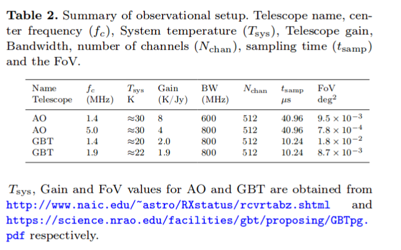
- 观测
- AO的观测在2017 December 12:50 UTC 和 2018 December 19:55 UTC之间进行，每次（epoch）对一个目标观测0.6个小时，所有11个目标一共耗时114个小时，每个目标在每个频率上耗时1小时到21小时不等。观测数据由PUPPI（AO的一个后端，backend）记录，中心频率分别为1380MHz和4.5GHz，频宽约为600MHz。
- GBT的观测在2017November 02:41 UTC 和 2018, July 31:02 UTC之间的10个时间段（epoch）上进行。每次在每个频率上对GW 170817观测1个小时。在开始的两个时间段，观测频率为1.4和1.9GHz（因为在早期，低频滤的射电辐射可能会被GRB后的ejecta吸收掉），之后只有1.4GHz的观测。观测数据由GUPPI记录。
- 每次观测前都会先观测一个已知的脉冲星来检查仪器状态。


-
数据分析
- 使用pipeline HEIMDALL处理数据，并从中搜寻宽度为40.96 - 41.93 ms的脉冲，在S/N > 6 的水平上一共找出17672个候选体。
- 使用卷积神经网络 FETCH 对这些候选体进行判断，分出 radio frequency interference (RFI) 和 潜在FRB候选体。设定判断阈值后，FETCH给出425个可能的FRB候选体，再经人工检查，最终找出68个单峰的候选体，不过这些信号都来自上面所说用来测试仪器状态的已知脉冲星，而其他的则是由附近的机场雷达发出的假脉冲。
-
Detectability of a repeating FRB
- 通过信噪比公式计算，分别对每个仪器在不同频段与S/N=10对应的通量上限（最低可观测流量）:
- AO: 1.4GHz upper limit ≈ 0.036 Jy ms ; 4.5 GHz upper limit ≈ 0.063 Jy ms
- GBT: 1.4GHz upper limit ≈ 0.085 Jy ms ; 1.9 GHz upper limit ≈ 0.098 Jy ms
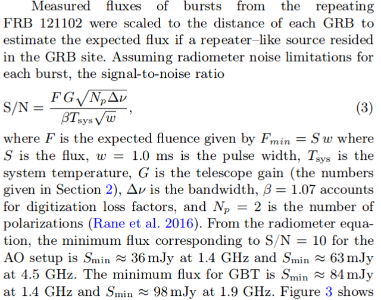
- 把FRB 121102的一系列爆发放到各个GRB的位置上，可以算出每次爆对应的预期观测流量，这些预期流量就可以与上面给出的上限进行比较，如

- 如果磁星能够发出类似FRB121102的爆发，Arecibo应该有能力在4.8Gpc的距离上探测到~的明亮爆发。
- 通过信噪比公式计算，分别对每个仪器在不同频段与S/N=10对应的通量上限（最低可观测流量）:
-
如果FRB的光度函数为Schechter function，则以上结果支持函数中应有一个较陡的幂律指数（α≲−1.0）以及一个较大的截断光度(≳ )。

The gravitational wave background signal from tidal disruption events
https://arxiv.org/abs/2007.13225
abstract
Authors: Martina Toscani (1), Elena M. Rossi (2), Giuseppe Lodato (1) ((1) Dipartimento di Fisica, Università Degli Studi di Milano, Via Celoria, 16, Milano, 20133, Italy, (2) Leiden Observatory, Leiden University, PO Box 9513, 2300 RA, Leiden, the Netherlands)
Comments: Accepted for Publications in MNRAS. 11 pages, 5 figures
In this paper we derive the gravitational wave stochastic background from tidal disruption events (TDEs). We focus on both the signal emitted by main sequence stars disrupted by super-massive black holes (SMBHs) in galaxy nuclei, and on that from disruptions of white dwarfs by intermediate mass black holes (IMBHs) located in globular clusters. We show that the characteristic strain 's dependence on frequency is shaped by the pericenter distribution of events within the tidal radius, and under standard assumptions . This is because the TDE signal is a burst of gravitational waves at the orbital frequency of the closest approach. In addition, we compare the background characteristic strains with the sensitivity curves of the upcoming generation of space-based gravitational wave interferometers: the Laser Interferometer Space Antenna (LISA), TianQin, ALIA, the DECI-hertz inteferometer Gravitational wave Observatory (DECIGO) and the Big Bang Observer (BBO). We find that the background produced by main sequence stars might be just detected by BBO in its lowest frequency coverage, but it is too weak for all the other instruments. On the other hand, the background signal from TDEs with white dwarfs will be within reach of ALIA, and especially of DECIGO and BBO, while it is below the LISA and TianQin sensitive curves. This background signal detection will not only provide evidence for the existence of IMBHs up to redshift z∼3, but it will also inform us on the number of globular clusters per galaxy and on the occupation fraction of IMBHs in these environments.
- 本文计算了两种TDE事件——星系核中SMBH瓦解主序星、球状星团中IMBH瓦解白矮星——中的被瓦解天体发出的引力波背景信号，并估计下一代天基引力波探测器——the Laser Interferometer Space Antenna (LISA), TianQin, ALIA, the DECI-hertz inteferometer Gravitational wave Observatory (DECIGO) and the Big Bang Observer (BBO)——是否能探测到这些信号。结果发现，对于前一种TDE的引力波信号，只有BBO能够在其最低频率探测到，而对于后一种，ALLA、DECIGO和BBO都可以探测到。
- 这样的探测工作可以为我们提供远距离（z~3）IMBH存在的证据，以及提供关于星系中球状星团的数量，IMBH在球状星团中所占比例等信息。

Diverse Jet Structures Consistent with the Off-axis Afterglow of GRB 170817A
https://arxiv.org/abs/2007.13116
abstract
Authors: Kazuya Takahashi, Kunihito Ioka
Comments: 11 pages, 5 figures, 2 tables, submitted to MNRAS
The jet structure of short gamma-ray bursts (GRBs) has been controversial after the detection of GRB 170817A as the electromagnetic counterparts to the gravitational wave event GW170817. Different authors use different jet structures for calculating the afterglow light curves. We formulated a method to inversely reconstruct the jet structure uniquely from a given off-axis GRB afterglow, without assuming any functional form of the structure. By systematically applying our inversion method, we find that more diverse jet structures are consistent with the observed afterglow of GRB 170817A within errors: such as hollow-cone, spindle, Gaussian, and power-law jet structures. In addition, the total energy of the reconstructed jet is arbitrary, proportional to the ambient density n0, with keeping the same jet shape if the parameters satisfy the degeneracy combination . Observational accuracy less than ∼6 per cent is necessary to distinguish the different shapes, while the degeneracy of the energy scaling would be broken by observing the spectral breaks. Future events in denser environment with brighter afterglows and observable spectral breaks are ideal for our inversion method to pin down the jet structure, providing the key to the jet formation and propagation.
- 短暴GRB 170817A的结构性喷流一直以来讨论颇多。本文使用一种逆向构建喷流结构的方法，即通过给定的偏轴GRB余辉的光变曲线，不加任何函数形式的限制，反推喷流结构的方法，试图确定GRB 170817A的喷流结构，但发现多种喷流结构都在一定误差允许范围内与GRB 170817A的观测符合，如hollow-cone, spindle, Gaussian, and power-law jet structures。
Revisiting AGN as the Source of IceCube's Diffuse Neutrino Flux
https://arxiv.org/abs/2007.12706
abstract
Authors: Daniel Smith, Dan Hooper, Abby Vieregg
Comments: 14 pages, 7 figures, to be submitted to JCAP
The origin of the astrophysical neutrino flux reported by the IceCube Collaboration remains an open question. In this study, we use three years of publicly available IceCube data to search for evidence of neutrino emission from the blazars and non-blazar Active Galactic Nuclei (AGN) contained the Fermi 4LAC catalog. We find no evidence that these sources produce high-energy neutrinos, and conclude that blazars can produce no more than 15% of IceCube's observed flux. The constraint we derive on the contribution from non-blazar AGN, which are less luminous and more numerous than blazars, is significantly less restrictive, and it remains possible that this class of sources could produce the entirety of the diffuse neutrino flux observed by IceCube. We anticipate that it will become possible to definitively test such scenarios as IceCube accumulates and releases more data, and as gamma-ray catalogs of AGN become increasingly complete. We also comment on starburst and other starforming galaxies, and conclude that these sources could contribute substantially to the signal observed by IceCube, in particular at the lowest detected energies.
- 本文使用IceCube三年的数据来寻找blazars（ 2860 sources in the Fermi 4LAC catalog）和non-blazar AGN（65个，63个包含在4LAC 中）作为中微子源的证据。
- 作者没有发现证据表明这些源产生了高能中微子，并给出blazar来源的中微子不超过IceCube观测的15%的结论。
- 至于非blazar的AGN的贡献，作者不能给出严格的限制，并称这类源仍有可能是IceCube探测到的全部diffuse neutrino flux的来源。
- 另外作者也提到星暴星系和其它starforming星系也能大量贡献观测到的中微子信号。
On the Energy Sources of the Most Luminous Supernova ASASSN-15lh
https://arxiv.org/abs/2007.13464
abstract
Authors: Long Li, Zi-Gao Dai, Shan-Qin Wang, and Shu-Qing Zhong
In this paper, we investigate the energy-source models for the most luminous supernova ASASSN-15lh. We revisit the ejecta-circumstellar medium (CSM) interaction (CSI) model and the CSI plus magnetar spin-down with full gamma-ray/X-ray trapping which were adopted by Chatzopoulos et al.(2016) and find that the two models cannot fit the bolometric LC of ASASSN-15lh. Therefore, we consider a CSI plus magnetar model with the gamma-rays/X-rays leakage effect to eliminate the late-time excess of the theoretical LC. We find that this revised model can reproduce the bolometric LC of ASASSN-15lh. Moreover, we construct a new hybrid model (i.e., the CSI plus fallback model), and find that it can also reproduce the bolometric LC of ASASSN-15lh. Assuming that the conversion efficiency (η) of fallback accretion to the outflow is typically ∼ , we derive that the total mass accreted is ∼ 3.9 . The inferred CSM mass in the two models is rather large, indicating that the progenitor could have experienced an eruption of hydrogen-poor materials followed by an energetic core-collapse explosion leaving behind a magnetar or a black hole.
- 目前学界存在多种模型解释超亮超新星的能源机制问题，如pair instability SN，磁星自旋减慢，喷射物与星周介质相互作用，回落吸积等模型。本文讨论了超新星ASASSN-15lh——最明亮的超新星（峰值热光度为）——的能量来源模型。
- 文章首先回顾了Chatzopoulos et al.(2016)采用的两种模型：ejecta-circumstellar medium interaction (CSI)模型和CSI加上伴随 full gamma-ray/X-ray trapping的磁星自旋减慢模型，发现这两种模型均不能拟合ASASSN-15lh的bolometric光变曲线。
- 故作者考虑了CSI加上伴随gamma-rays/X-rays leakage effect的磁星模型以消除理论光变曲线在晚期的超出，修改后的模型可以重现bolometric光变曲线。另外作者还考虑了CSI加回落吸积的组合模型，在一定条件下也能重现光变曲线，此情况下假设回落吸积物质到外流的转化效率为典型的~，则总吸积质量约为3.9。
- 两种模型导出的CSM质量都比较大（SN ejecta + CSM: ~61 , ~ 47 ），表明前身星可能是经历了一次少氢物质的爆发，随后是一次高能的核塌缩爆炸，留下一个磁星或是黑洞。


PTF11rka: an interacting supernova at the crossroads of stripped-envelope and H-poor super-luminous stellar core collapses
https://arxiv.org/abs/2007.13144
abstract
Authors: Elena Pian , Paolo A. Mazzali , Takashi J. Moriya et al. Comments: 18 page, 9 figures, MNRAS, in pressThe hydrogen-poor supernova PTF11rka (z = 0.0744), reported by the Palomar Transient Factory, was observed with various telescopes starting a few days after the estimated explosion time of 2011 Dec. 5 UT and up to 432 rest-frame days thereafter. The rising part of the light curve was monitored only in the filter band, and maximum in this band was reached ~30 rest-frame days after the estimated explosion time. The light curve and spectra of PTF11rka are consistent with the core-collapse explosion of a ~10 carbon-oxygen core evolved from a progenitor of main-sequence mass 25--40 , that liberated a kinetic energy () ~ , expelled ~8 of ejecta (), and synthesised ~0.5 of 56Ni. The photospheric spectra of PTF11rka are characterised by narrow absorption lines that point to suppression of the highest ejecta velocities >~15,000 km/s. This would be expected if the ejecta impacted a dense, clumpy circumstellar medium. This in turn caused them to lose a fraction of their energy (~), less than 2% of which was converted into radiation that sustained the light curve before maximum brightness. This is reminiscent of the superluminous SN 2007bi, the light-curve shape and spectra of which are very similar to those of PTF11rka, although the latter is a factor of 10 less luminous and evolves faster in time. PTF11rka is in fact more similar to gamma-ray burst supernovae (GRB-SNe) in luminosity, although it has a lower energy and a lower ratio.
- 尽管stripped-envelope和更大质量的H-poor超亮超新星在观测上有所不同，但这两类事件间仍存在一些联系，包括内秉性质，CSM起的作用，以及超亮超新星和最高能（the most energetic）的H-poor超新星都有可能是磁星旋转驱动的。通过广域巡天项目（large area sky survey）对超新星的系统准确的调查和研究，会发现一些具有中间性质的目标，把看上去不相关的两类超新星联系起来（This systematic approach makes unbiased detections possible and brings to evidence objects with intermediate properties that bridgeseemingly separate groups）。一个关键的例子就是H- 和 He-poor的Ic型 SN PTF11rka 。PTF11rka的光变曲线形状和光球阶段的光谱均与超亮的pair-instability（正负电子对的产生导致热核爆发）超新星，SN 2007bi相似，使得PTF11rka成为联系stripped-envelope SNe（窄线和宽线的Ic SNe）与H-poor SLSNe的一个值得监测的目标。
- 作者对少氢超新星 PTF11rka (z=0.074)的观测数据，包括光变曲线和光谱，进行了讨论分析。
- 测光开始于爆后数天（估计爆发时间为2011年12月5日UT），并一直持续，最后一次观测在开始观测的432天后。PTF11rka光变的上升阶段仅有波段（P48）的数据，该波段下大概在爆后30天左右达到峰值。之后P60也参与进来，提供了gri波段的数据。在最后的fully nebular phase，即430天左右，由VLT提供了BVRI的数据。文中提到g波段的峰值至少发生在r波段，i波段的峰值的15天前，表明这个SN的光变有很强的色差行为。根据这些数据，作者构造了pseudebolometric光变曲线（注意在最大亮度达到前只有波段的数据，因此只能基于一定假设构造早期的pseudobolometric光变曲线，导致其的峰值有很大的不确定性。SN 2007bi的情况也类似）。
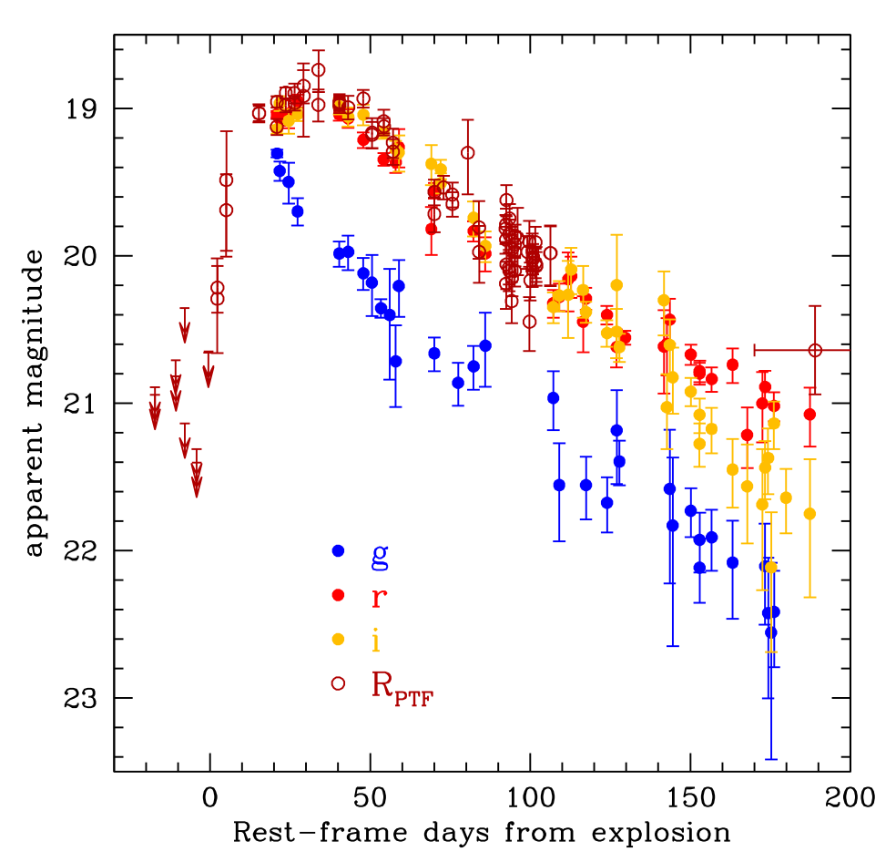

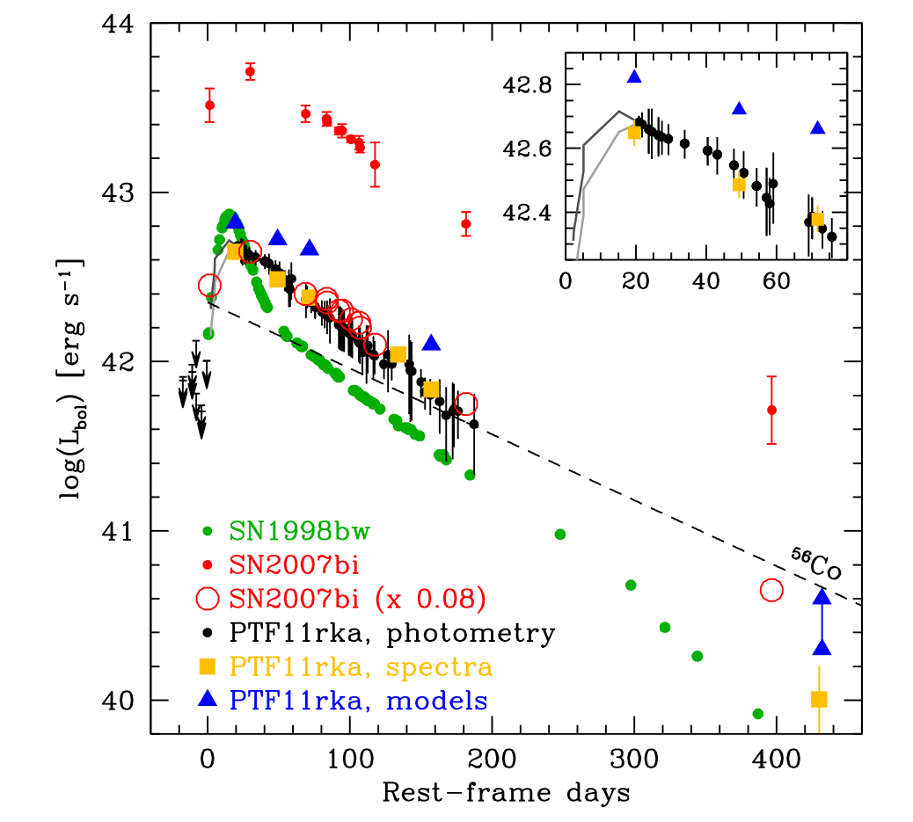

- 测光期间一共进行了6次测谱。

- PTF11rka在20天时的光谱与SN 2007bi在峰值后50天（爆发后120天）时的光谱非常相似，表明前者演化较快，其光球速度应该也与SN 2007bi50天时测量的结果，~12000 km/s接近。


- PTF11rka 和 SN 2007bi的星云阶段光谱存在一些不同，比较显著的一点就是很弱的铁线表明前者较后者只合成了少量的56Ni，这一点从光变曲线独立得出。
- 在模型拟合环节，作者使用最早的20天的光谱来确定爆发外层（outer layer）的参数（如velocity cut, ）,用光变曲线估计喷射物质量,以及用光变曲线（由光谱数据拟合的光变曲线）和晚期光谱估计56Ni的合成质量。
- 采用与Moriya et al 2010用来拟合SN 2007bi的模型一样的喷射物密度结构，PTF11rka给出 ~ ，，这样 就相对较低。SN 2007bi的相关量为56Ni ~ ，，， ，ejecta velocity cut （Moriya T. J., Mazzali P. A., & Tanaka M. 2019b）。
- 通过拟合20天的光谱， 作者将喷射物的分布在15000 km/s处截断，并给出， 。
- 这样就给出，质量约为0.1的部分喷射物“撞进”了一个密度较大，比较厚重的星周介质中，损失了~的能量，根据光变曲线的拟合，其中有大概2%的能量被辐射出来。
- 另外根据光变曲线的拟合，估计56Ni的产量为0.5是必要的,以此匹配接近峰值时的光度 ~ 。这个估计比用晚期星云阶段光谱估计（~0.4 ）的大,可能是因为部分56Ni由于速度大于星云速度（4000 kms），从而没有在晚期星云光谱作出贡献。
- 总结
- 首先，PTF11rka的光谱和大部分的光变曲线在很大程度上都可以在传统框架下去解释，即超新星喷发出大质量的恒星核，且56Ni的放射性衰变支持着观测的光度（SN ejects a massive stellar core and the luminosity is supported by the radioactive decay of 56Ni）。所需要的56Ni的质量相当大~0.4-0.5，与GRB-SNe相当。另外，喷射物质量的估计值，也是在stripped-envelope 核塌缩SNe 的分布中处于较高的一部分。根据，可推断出CO核心的质量在之间，前身主序星为之间。具体取决于残骸是低质量中子星还是黑洞。其动能 ~ 虽然高但并不极端，更像是没有伴随GRB的明亮的 stripped-envelope SNe。
- 然而，PTF11rka的早期光谱与SLSN 2007bi的相似。最近的一些工作表明其爆发的CO核心质量为~40（前身星可能有60 - 80）。尽管质量很大，SN 2007bi的爆发也没有特别高能（ ）。其光谱的拟合情况表明2007bi和PTF11rka一样，喷射物也是与CSM撞击而被减速。
- PTF11rka的峰值光度与H-poor SNe的峰值光度的对比表明，前者光度大约比SLSNe低一个量级，且正好处在Ib/c型超新星的范围，而在宽线Ic型超新星中处于较低光度水平。特别的，56Ni的质量非常接近于SN 1998bw，且其宽光变曲线的形状和峰值光度也与“spectroscopically normal” Type Ic SN 2011bm相似。
- 从光谱的角度来看，尽管PTF11rka在早期与SLSN 2007bi相似，但其后期光谱（爆发后的157和432天）则有H-poor的普通SNe，宽线SNe和SLSNe的影子。（Its late-time spectra are reminiscent of those of H-poor normal SNe,broad-lined SNe, and SLSNe ）
- 以上这些性质使得PTF11rka将普通超新星，energetic stripped-envelope超新星（包括GRB-SNe）以及H-poor 超亮超新星联系起来（gap-bridging）。另外，作者提到PTF11rka和SLSN 2007bi之间的相似表明56Ni以及CSM的相互作用在H-poor SLSNe的研究中的作用不能忽略。
200729
Spectroscopic properties of the dwarf nova-type cataclysmic variables observed by LAMOST
https://arxiv.org/abs/2007.14016
abstract
Authors: Han Zhongtao, Boonrucksar Soonthornthum, Qian Shengbang, et al.
Comments: 29 pages, 11 figures
Spectra of 76 known dwarf novae from the LAMOST survey were presented. Most of the objects were observed in quiescence, and about 16 systems have typical outburst spectra. 36 of these systems were observed by SDSS, and most of their spectra are similar to the SDSS spectra. 2 objects, V367 Peg and V537 Peg, are the first to observe their spectra. The spectrum of V367 Peg shows a contribution from a M-type donor and its spectral type could be estimated as M3-5 by combining its orbital period. The signature of white dwarf spectrum can be seen clearly in four low-accretion-rate WZ Sge stars. Other special spectral features worthy of further observations are also noted and discussed. We present a LAMOST spectral atlas of outbursting dwarf novae. 6 objects have the first outburst spectra, and the others were also compared with the published outburst spectra. We argue that these data will be useful for further investigation of the accretion disc properties. The HeII λ4686 emission line can be found in the outburst spectra of seven dwarf novae. These objects are excellent candidates for probing the spiral asymmetries of accretion disc.
- 作者使用LAMOST对76个已知的矮新星拍摄了131张光谱，讨论了它们的光谱性质。
- 大部分光谱是在矮新星的沉默阶段的光谱（光学薄，主要呈现较强的Balmer线和中性氦系列线叠加在较平坦的连续谱上），而有16个系统的光谱是比较典型的爆发时期的光谱（变为光学厚，吸收线变为主要特征，且由于吸积盘温度高，连续谱偏蓝）。
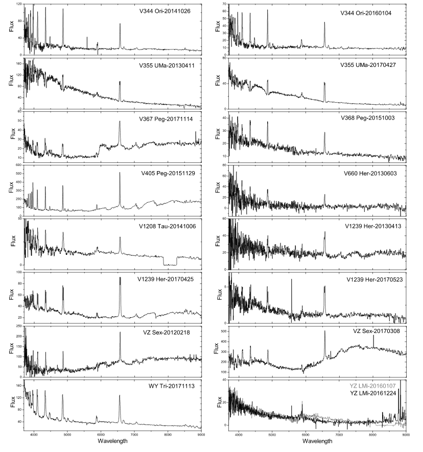

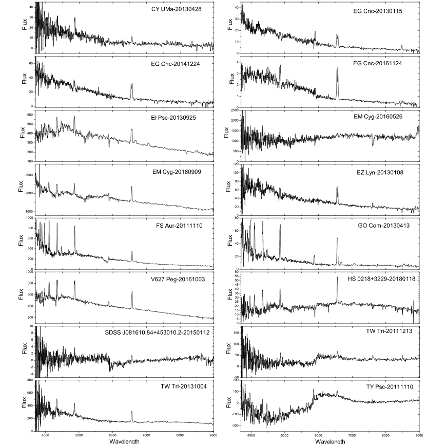

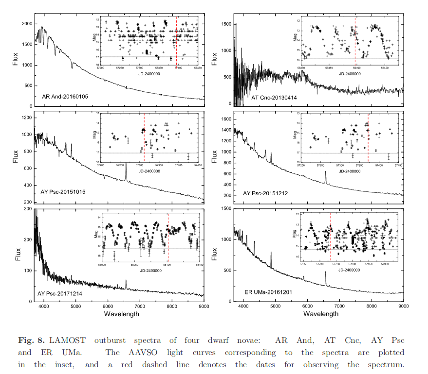
- V367 Peg V537 Peg这两个目标是首次被拍光谱，其中V367 Peg的光谱显示出了伴星（donor）的M型光谱。
- 另外，在4个低吸积率的系统（WZ Sge stars, EG Cnc, EZLyn, PQ And and V355 UMa）的光谱中显漏出白矮星的光谱（通常由比较陡的“蓝色”连续谱加上围绕Blamer线的较宽的吸收"翼"" -> often reveal a steep blue continuum plus broad absorption wings around the Balmer emissions）
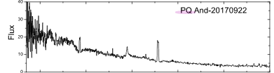

- 最后提到outburst时期的光谱可用来研究吸积盘的性质。
SN 2018zd: An Unusual Stellar Explosion as Part of the Diverse Type II Supernova Landscape
https://arxiv.org/abs/2007.14348
abstract
Authors: Jujia Zhang, Xiaofeng Wang, Jozsef Vinko et al.
Comments: Accepted for publication in MNRAS, 20 pages, 11 figures.
We present extensive observations of SN 2018zd covering the first ~450 d after the explosion. This SN shows a possible shock-breakout signal ~3.6 hr after the explosion in the unfiltered light curve, and prominent flash-ionisation spectral features within the first week. The unusual photospheric temperature rise (rapidly from ~12,000 K to above 18,000 K) within the earliest few days suggests that the ejecta were continuously heated. Both the significant temperature rise and the flash spectral features can be explained with the interaction of the SN ejecta with the massive stellar wind (), which accounts for the luminous peak () of SN 2018zd. The luminous peak and low expansion velocity () make SN 2018zd to be like a member of the LLEV (luminous SNe II with low expansion velocities) events originated due to circumstellar interaction. The relatively fast post-peak decline allows a classification of SN 2018zd as a transition event morphologically linking SNe IIP and SNe IIL. In the radioactive-decay phase, SN 2018zd experienced a significant flux drop and behaved more like a low-luminosity SN IIP both spectroscopically and photometrically. This contrast indicates that circumstellar interaction plays a vital role in modifying the observed light curves of SNe II. Comparing nebular-phase spectra with model predictions suggests that SN 2018zd arose from a star of ~12 . Given the relatively small amount of 56Ni (0.013 − 0.035 ), the massive stellar wind, and the faint X-ray radiation, the progenitor of SN 2018zd could be a massive asymptotic giant branch star which collapsed owing to electron capture.
- 本文发表了对SN 2018zd的前450天的观测情况。
- SN 2018zd于UT 2018.03.02被报道，随后日本的Takamizawa station的观测给出无滤光波段星等17.8mag。其光谱最早由云南丽江天文台在发现后三小时拍摄。随后的光谱由于具有较窄的谱线被证认为一个IIn型超新星。
- 这个超新星的unfiltered光变曲线在约3.6小时出现了一个可能的shock-breakout（当激波传播到星体表面时会产生明亮的耀发，持续时标通常小于1小时。Garnavich et al. 2016）信号，并在第一周出现了明显的flash-ionisation光谱特征（如氢, N v λλ4334, 4641, He ii λ4686, He ii λ4860, C iv λλ5801, 5812, 以及 C iv λ7110的窄发射线。这些发射线由周围经X射线电离的星风物质发出 ）。


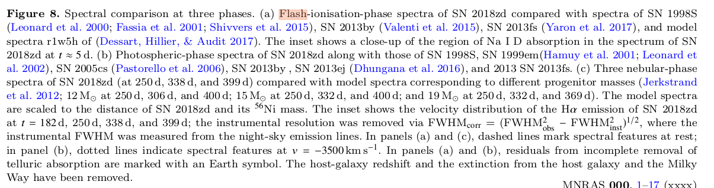
- 其光球层温度在最初的几天里迅速从约12000K 升至约18000K，显示喷射物被不间断持续地加热。
- 显著的温度上升和flash-ionisation光谱特征都可以用SN 喷射物与大质量星风（）相互作用来解释，这也同样能解释其较亮的峰值光度。较亮的峰值光度和较低的扩散速度（expansion velocity ~ ）显示SN 2018zd像是LLEV（luminous SNe II with low expansion velocities; 起源于星周相互作用circumstellar interaction）事件中的一员。
- 根据其相对较快的峰值后衰减，也可以从形态上把它分类为一个连接IIP（Plateau，最常见）型和IIL（Linear）型超新星的过渡性事件。

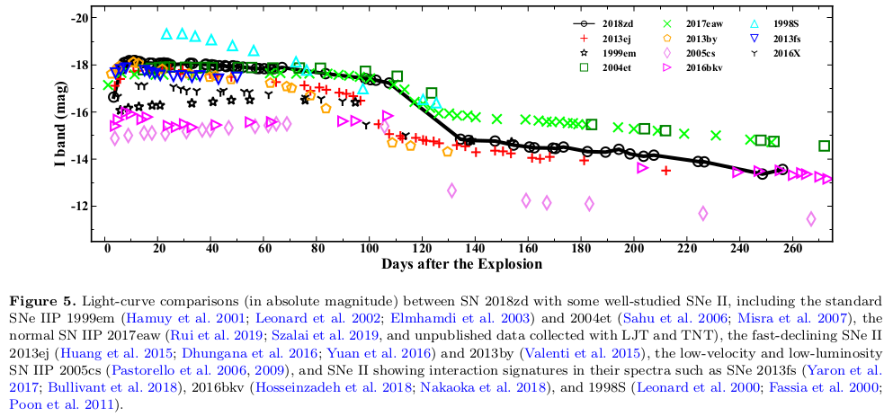

- 在radioactively decay的阶段，它出现了显著的流量下降，并且在测光和测谱上均与低光度IIP型SN更类似（如SN 2018zd 68天的光谱与 SN 1999em 43天的光谱相似）。
- 将星云阶段的光谱与模型预测进行比较，说明SN 2018zd前身星质量约为12。考虑到56Ni的量相对较少（0.013 − 0.035 ），以及较大质量的星风和较弱的X射线辐射，SN 2018zd的前生星可能是一个因为电子俘获而塌缩的massive asymptotic giant branch star.
200730
Detection of 15 bursts from FRB 180916.J0158+65 with the uGMRT
https://arxiv.org/abs/2007.14404
abstract
Authors: Visweshwar Ram Marthi, Tasha Gautam, Dongzi Li et al.
Comments: 5 pages, 4 figures, submitted to MNRAS Letters
We report the findings of a uGMRT observing campaign on FRB 180916.J0158+65, discovered recently to show a 16.35-day periodicity of its active cycle. We observed the source at 550-750 MHz for ∼2 hours each during three successive cycles at the peak of its expected active period. We find 0, 12, and 3 bursts respectively, implying a highly variable bursting rate even within the active phase. We consistently detect faint bursts with spectral energies only an order of magnitude higher than the Galactic burst source SGR~1935+2154. The times of arrival of the detected bursts rule out many possible aliased solutions, strengthening the findings of the 16.35-day periodicity. A short-timescale periodicity search returned no highly significant candidates. Two of the beamformer-detected bursts were bright enough to be clearly detected in the imaging data, achieving sub-arcsecond localization, and proving as a proof-of-concept for FRB imaging with the GMRT. We provide a 3σ upper limit of the persistent radio flux density at 650 MHz of 66 μJy which, combined with the EVN and VLA limits at 1.6~GHz, further constrains any potential radio counterpart. These results demonstrate the power of uGMRT for targeted observations to detect and localize known repeating FRBs.
- 本文报道了作者使用uGMRT对周期为16.35天（活跃期集中在5天的窗口内，CHIME/FRB Collaboration et al., 2020, Nature, 582, 351）重复快速射电爆FRB 180916.J0158+65的观测情况。
- 观测分别在预期活跃阶段的 2020 March 09,2020 March 24, 以及 2020 June 30进行，观测频段为550-750 MHz，每次时长两小时。这三次分别探测到了0,12,3次爆发，表明此FRB在活跃期也具有相当高的变化性。
- 有两次爆发（beamformer-detected bursts）比较明亮，足够进行亚角秒定位。

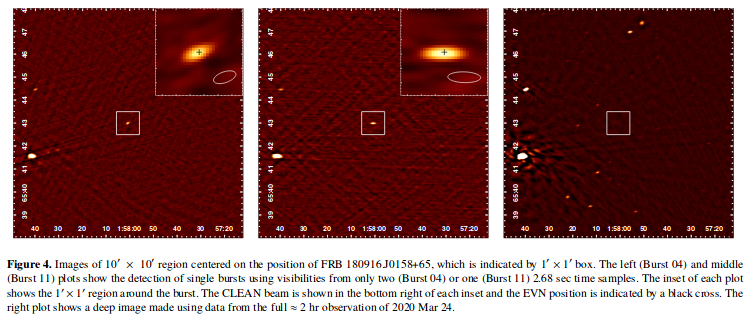
200731
Dust-scattering halo and giant hard X-ray flare from the Supergiant Fast X-ray Transient IGR J16479-4514 investigated with XMM-Newton and INTEGRAL
https://arxiv.org/abs/2007.15329
abstract
Authors: V. Sguera, A. Tiengo, L. Sidoli, A. J. Bird
Comments: Accepted for publication on The Astrophysical Journal (received 20-Apr-2020, accepted 27-Jul-2020)
We report results from the analysis of XMM-Newton and INTEGRAL data of IGR J16479-4514. The unpublished XMM-Newton observation, performed in 2012, occurred during the source eclipse. No point-like X-ray emission was detected from the source, conversely extended X-ray emission was clearly detected up to a size distance compatible with a dust scattering halo produced by the source X-ray emission before being eclipsed by its companion donor star. The diffuse emission of the dust-scattering halo could be observed without any contamination from the central point X-ray source, compared to a previous XMM-Newton observation published in 2008. Our comprehensive analysis of the 2012 unpublished spectrum of the diffuse emission as well as of the 2008 re-analysed spectra extracted from three adjacent time intervals and different extraction regions (optimized for point-like and extended emission) allowed us to clearly disentangle the scattering halo spectrum from the residual point-like emission during the 2008 eclipse. Moreover, the point-like emission detected in 2008 could be separated into two components attributed to the direct emission from the source and to scattering in the stellar wind, respectively. From archival unpublished INTEGRAL data, we identified a very strong () and fast (25 minutes duration) flare which was classified as giant hard X-ray flare since the measured peak-luminosity is . Giant X-ray flares from SFXTs are very rare, to date only one has been reported from a different source. We propose a physical scenario to explain the origin in the case of IGR J16479-4514.
- 本文对IGRJ 16479-4514（Supergiant Fast X-ray Transient，是INTEGRAL上天后发现的一种新类别的Supergaint High-Mass X-ray Binaries，通常是中子星围绕一个早期超巨星旋转的系统。特点之一是具有明亮~且快速—几小时到几天—的X射线暂现行为。这个源最早在2003年由INTEGRAL 发现）这个源的XMM-Newton和INTEGRAL观测数据做了分析。
- XMM-Newton在2012年的观测（unpublished）发生在这个源的“蚀变”期，当时的观测没有呈现X射线点源，相反是一个延展的X射线辐射源（extended X-ray emission），尺度上看比较像是在这颗源在被伴星掩盖前发出的X射线辐射被灰尘散射形成的灰尘散射晕（dust scattering halo）。
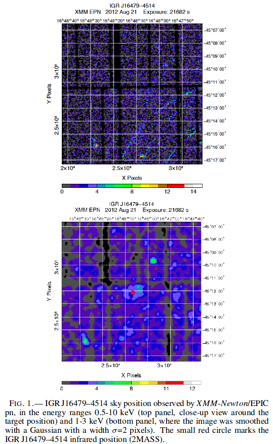

- 对比XMM-Newton 2008年的观测（处于“蚀变”开始期 eclipse ingress，且看到了源），2012年观测到的散射晕的漫发射（diffuse emission）基本上没有被X射线源污染。通过详细分析2012年的漫发射光谱和2008年的光谱，可以比较清楚的把散射晕的光谱与2008年“蚀变”期的残留点源辐射区分开来。进一步的，2008年的点源辐射可视作两个成分的组合，一个是来自源的直接辐射，另一个是星风中的散射。


- 从2008年3月19日INTEGRAL的数据（archival unpublished）中，作者发现有个强烈（）且快速（25分钟持续时间）的耀发，峰值光度达到，可归类为giant hard X-ray flare。历史上来自SFXT的giant hard X-ray flare非常罕见，仅被报道过一次。
- 最后提出了一中物理情景来解释 IGR J16479-4514中的giant hard X-ray flare起源（较大的吸积质量，处于具有特殊条件的轨道阶段）。
Confirmed width-Eiso and width-Liso relations in GRB: comparison with the Amati and Yonetoku relations
https://arxiv.org/abs/2007.15443
abstract
Authors: Zhao-Yang Peng, Yue Yin, Ting Li, Hui Wu, Dao-Zhou WangComments: 25 pages,25 figures,8 tables, accepted for publication in The Astrophysical Journal. arXiv admin note: text overlap with arXiv:1908.04663 by other authors
The well-known Amati and Yonetoku relations in gamma-ray bursts (GRBs) show the strong correlations between the rest-frame spectrum peak energy, and the isotropic energy, as well as isotropic peak luminosity,. Recently, Peng etal. (2019) showed that the cosmological rest-frame spectral width are also correlated with as well as . In this paper, we select a sample including 141 BEST time-integrated F spectra and 145 BEST peak flux P spectra observed by the Konus-Windwith known redshift to recheck the connection between the spectral width andEisoaswell asLiso. We define six types of absolute spectral widths as the differences between the upper (E2) and lower energy bounds (E1) of the full width at 50%, 75%, 85%, 90%,95%, 99% maximum of the versus spectra. It is found that all of the rest-frame absolute spectral widths are strongly positive correlated with as well as for the long burst for both the F and P spectra. All of the short bursts are the outliers for width- relation and most of the short bursts are consistent with the long bursts for the width- relation for both F and P spectra. Moreover, all of the location energy, and , corresponding to various spectral widths are also positive correlated with as well as . We compare all of the relations with the Amati and Yonetoku relations and find the width- and width- relations when the widths are at about 90% maximum of the spectra almost overlap with Amati relation and Yonetoku relation, respectively. The correlations of , and , when the location energies are at 99% maximum of the spectra are very close to the Amati and Yonetoku relations, respectively. Therefore, we confirm the existence of tight width- and width- relations for long bursts. We further show that the spectral shape is indeed related to and . The Amati and Yonetoku relations re not necessarily the best relationships to relate the energy to the and . They may be the special cases of the width- and width- relations or the energy- and energy- relations.
- 本文主要调查了GRB光谱宽度（作者按不同的最大流量比值定义了六个光谱宽度）与 isotropic energy, 和 isotropic peak luminosity, 之间的相关性。
- 光谱样本包含141个time-integrated光谱（F光谱）和145个峰值流量时的光谱（P光谱）。
- 发现对于长爆，两种光谱都表现出width- 和width- 较强的相关性，而短爆则大多只表现出width- 的相关性。
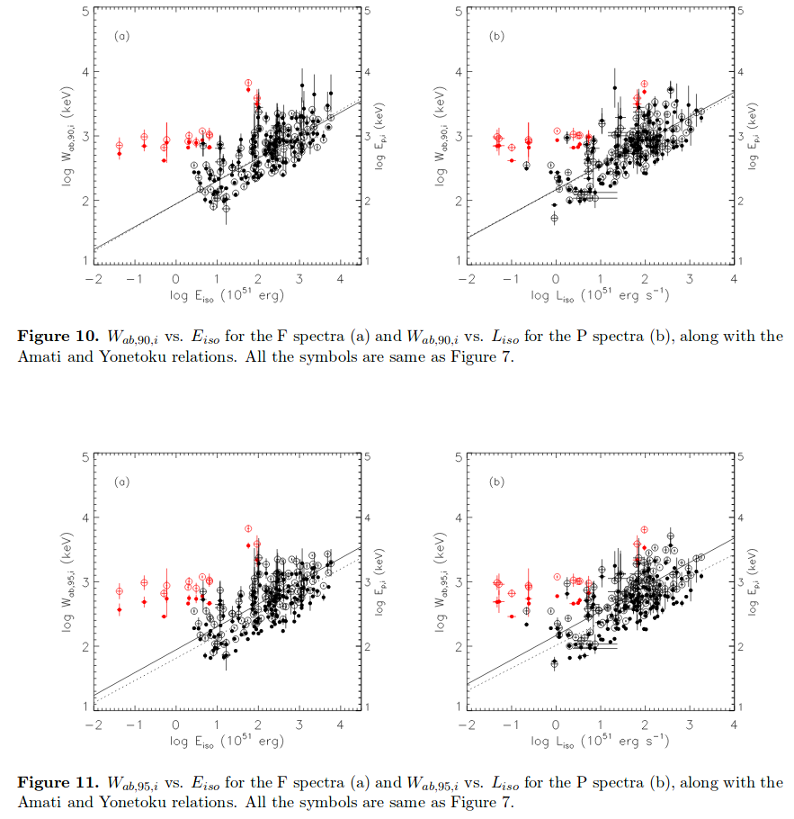

- 另外还讨论了作为宽度上下界的,与分别与和的相关性，发现宽度为最大值99%时，这些关系与Amati and Yonetoku relations比较接近。
Searching for Electromagnetic Counterparts to Gravitational-wave Merger Events with the Prototype Gravitational-wave Optical Transient Observer (GOTO-4)
https://arxiv.org/abs/2004.00025v2
abstract
Authors: B. P. Gompertz, R. Cutter, D. Steeghs et al. Comments: 15 pages, 7 figures, 3 tables. Accepted for publication in MNRAS. Author's final submitted versionWe report the results of optical follow-up observations of 29 gravitational-wave triggers during the first half of the LIGO-Virgo Collaboration (LVC) O3 run with the Gravitational-wave Optical Transient Observer (GOTO) in its prototype 4-telescope configuration (GOTO-4). While no viable electromagnetic counterpart candidate was identified, we estimate our 3D (volumetric) coverage using test light curves of on- and off-axis gamma-ray bursts and kilonovae. In cases where the source region was observable immediately, GOTO-4 was able to respond to a GW alert in less than a minute. The average time of first observation was 8.79 hours after receiving an alert (9.90 hours after trigger). A mean of 732.3 square degrees were tiled per event, representing on average 45.3 per cent of the LVC probability map, or 70.3 per cent of the observable probability. This coverage will further improve as the facility scales up alongside the localisation performance of the evolving gravitational-wave detector network. Even in its 4-telescope prototype configuration, GOTO is capable of detecting AT2017gfo-like kilonovae beyond 200Mpc in favourable observing conditions. We cannot currently place meaningful electromagnetic limits on the population of distant (=1.3 Gpc) binary black hole mergers because our test models are too faint to recover at this distance. However, as GOTO is upgraded towards its full 32-telescope, 2 node (La Palma & Australia) configuration, it is expected to be sufficiently sensitive to cover the predicted O4 binary neutron star merger volume, and will be able to respond to both northern and southern triggers.
- 本文报道了使用GOTO-4（4指的是4个望远镜，GOTO计划会建造更多望远镜）对LVC O3上半期中的29个引力波事件进行的光学跟踪观测结果。
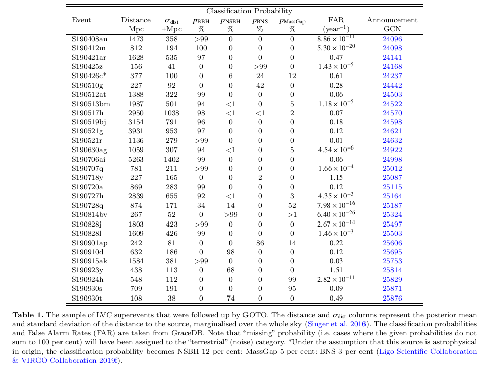
-
这些观测没有发现靠谱的电磁对应体，作者使用正轴/偏轴的GRB以及千新星的测试光变曲线（test light curve）对他们的体积覆盖（3D/volumetric coverage）情况进行了估计。（即用模拟的光变曲线来检测GOTO-4的覆盖能力，but how？？）
-
情况允许的条件（in cases of well-timed events that fell in unconstrained tiles,？？）下，GOTO-4可以在小于1分钟内对GW警报作出反应，（算上其它情况？）平均下来是在GW警报后8.79小时（trigger后9.90小时）开始进行第一次反应观测。
-
平均每次事件会对732.3平方度（单个最高可达2667平方度）的天区进行划分观测，对应LVC 45.3%的误差范围，或者70.3%的观测可能性天区（observable probability）。随着引力波探测器定位本领的进步，这些覆盖率将会进一步提高。
-
即使目前GOTO只部署了4架望远镜（组合视场约19平方度，位于La Palma, Spain），理想条件下也有能力在200Mpc以上的距离观测到AT2017gfo类似的千新星（正文：could have unearthed an AT2017gfo-like KN up to 126 Mpc away. GOTO-4 achieves a maximum depth sufficient to recover our KN test source in one-in-five follow up attempts for a distance drawn from the BNS distance distribution）。不过现在还不能给~1.3Gpc的双黑洞并合事件定一个电磁上限（electromagnetic limits ），因为测试用的模型不够亮，不足以覆盖如此远的距离（正文：However, we find that due to their distance, it is not possible to place model-constraining limits on EM emission from the distant (> 250 Mpc) population of BBH mergers detected by the LVC unless they house on-axis gamma-ray bursts）。
-
尽管如此，等将来GOTO部署了全部2个节点（La Palma & Australia，每个节点的视场约75平方度）的32架望远镜，理论上就有足够的灵敏度去覆盖O4的双中子星并合事件（binary neutron star volume），并且对南半球和北半球的触发均能作出反应。
-
DATA SAMPLE
- Data Collection with GOTO
- GOTO sentinel (Dyer et al. 2018)自动获取LVC的probability map后会根据地图给出观测曝光计划；
- 观测天区的划分是固定的，拍摄后的图像将与天区以前的模板图像进行对比来找暂现源；
- 观测计划会随LVC发布的天区图更新；
- 对于首次反应干测，GOTO使用其较宽的L波段（3750 - 7000 A）滤光片，大约相当于其B，G，R波段的综合，也相当于SDSS g 和 r 波段的综合；
- 默认策略是每个tile至少观测两次，每次3 x 60s曝光。这些图像经过median叠加形成science图像；
- 对于BNS事件，观测会在数天内重复进行。
- Image Processing and Data Mining
- 自动下载图像到处理队列，将处理后结果录入PostgreSQL数据库
- 处理过程包括bias subtraction, dark subtraction. flat-field correction, overscan correction and trimming。接着使用Astrometry.net加载wcs等信息（astrometric solution），使用APASS V波段或者PS1 g波段的大量参考星stars作为对比来确定测光0点。
- 将图像median叠加后，如果有模板图像，则是用HOTPANTS进行图像相减。
- 通过一套算法去证认相减图像上的features，得分低的再经过人工筛选；得分高的就将源及相应的信息放到浏览器上供人检查。这一整套流程大概需要10到20分钟完成。
- 对一个引力波事件跟踪结束后（after a compaign），会用脚本把所有与此事件的观测数据信息提取出来，评估跟踪观测的表现。（For the purpose of this paper, the data aremined after a campaign has been completed using a scriptwhich pulls all observations linked to each event. The obser-vations are analysed and their meta-data is taken to assessfollow-up performance.）
- Data Collection with GOTO
-
Test Sources
- 正轴GRB余辉
- 偏轴GRB余辉
- 代表类千新星演化的Bazin function (Bazin et al. 2011)
- Constant source ，用于检查GOTO-4对于相对亮且稳定的源的观测能力
-
METHOD
- Volumetric Coverage
- 将测试模型的实际观测对应时间段的星等（经过银河系消光修正）与观测图像的极限星等相比，来估计最远能观测的距离（在此距离上，修正的模型星等等于对应真实观测图像的5极限星等）。
- Finally, LVC probability map pixels are sorted intogroups of equal observable horizon, where their probabilitydensity functions are summed (cf. Singer et al. 2016), andthe combined probability density function of each group isintegrated out to their shared horizon. Our full volumetricprobability coverage is then the sum of all of the groups.
- Volumetric Coverage